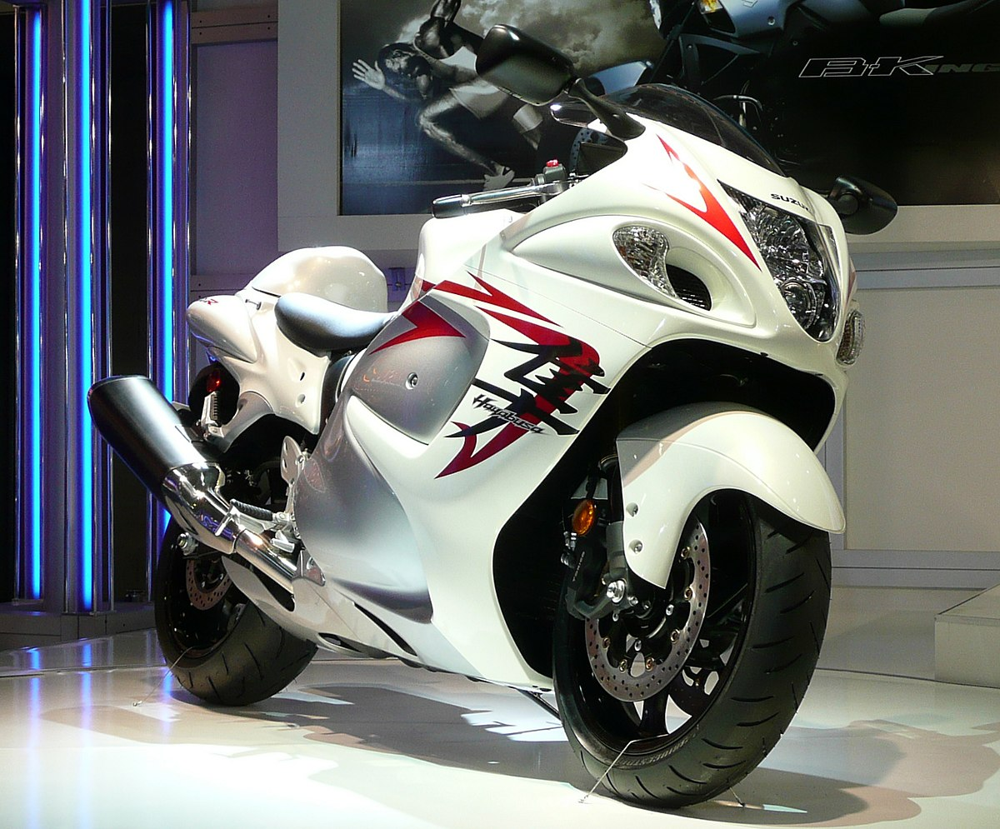
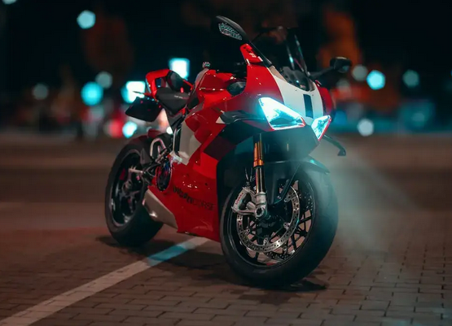
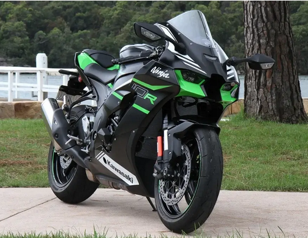
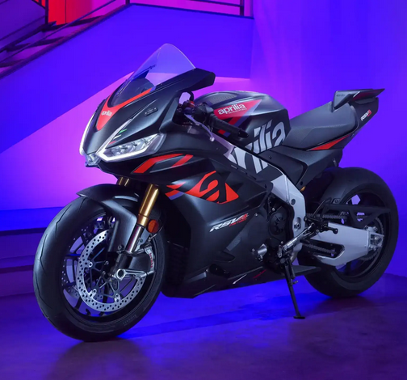

Hayabusa
The Suzuki Hayabusa is a legendary sportbike known for its speed, performance, and aerodynamic, muscular design.
- Engine: 1340cc, liquid-cooled, inline-four
- Horsepower: 190 PS @9700 rpm
- Torque: 150 Nm @7000 rpm
- Transmission: 6-speed constant mesh with a bi-directional quick shifter
- Top speed: Around 299-300 km/h

Ducati Panigale V4 S Corse
The Ducati Panigale V4 S Corse is a race-bred superbike known for its explosive power, precision handling, and MotoGP-inspired engineering.
- Engine: 1103cc, liquid-cooled, Desmosedici Stradale 90° V4
- Horsepower: 214 HP @13,000 rpm
- Torque: 124 Nm @10,000 rpm
- Transmission: 6-speed with Ducati Quick Shift (DQS) up/down EVO 2
- Top Speed: Around 300+ km/h

BMW S 1000 RR
The BMW S 1000 RR is a cutting-edge superbike renowned for its advanced electronics, razor-sharp agility, and dominating track performance.
- Engine: 999cc, water/oil-cooled, inline-four
- Horsepower: 207 HP @13,500 rpm
- Torque: 113 Nm @11,000 rpm
- Transmission: 6-speed with Shift Assist Pro quickshifter
- Top speed: Around 303 km/h

Kawasaki Ninja ZX-10R
The Kawasaki Ninja ZX-10R is an aggressive superbike built for championship-level speed, stability, and race-tuned responsiveness.
- Engine: 998cc, liquid-cooled, inline-four
- Horsepower: 203 HP @13,200 rpm (with ram air)
- Torque: 114.9 Nm @11,400 rpm
- Transmission: 6-speed return shift with quickshifter
- Top speed: Around 299 km/h

Aprilia RSV4
The Aprilia RSV4 is an elite superbike celebrated for its V4 performance, premium aerodynamics, and world-class racing heritage.
- Engine: 1099cc, liquid-cooled, 65° V4
- Horsepower: 217 HP @13,000 rpm
- Torque: 125 Nm @10,500 rpm
- Transmission: 6-speed with Aprilia Quick Shift (AQS)
- Top speed: Around 305 km/h